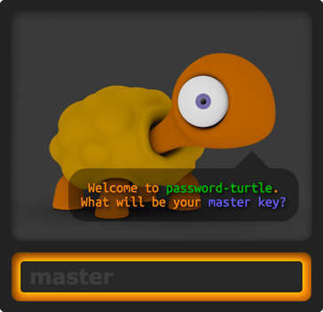
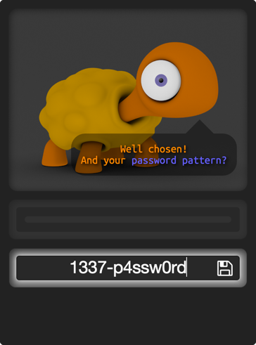

It generates a unique password from 3 ingredients:
It stores your pattern(s) and site names for you
in an encrypted file on your hard drive.
It makes it easy to have a different passsword for each site
while only needing to remember a single master password.
When you start the application,
a turtle icon will be added to your menu bar:
Clicking the menu icon will open a window and prompt you to
enter your master key:

... and a default pattern:

The kind of characters you use in the pattern
is reflected in the password.
If you use a pattern with some reasonable length
and include some special characters and digits in it,
you can probably use it on most of the sites out there.
From now on, if you enter a site name
the turtle will generate a unique password for it:
If you loose your stash file your default pattern
and site names will be lost.
Therefore: don't forget your master password
and regularly backup your stash file, which is located at
~/Library/Preferences/password-turtle.stash